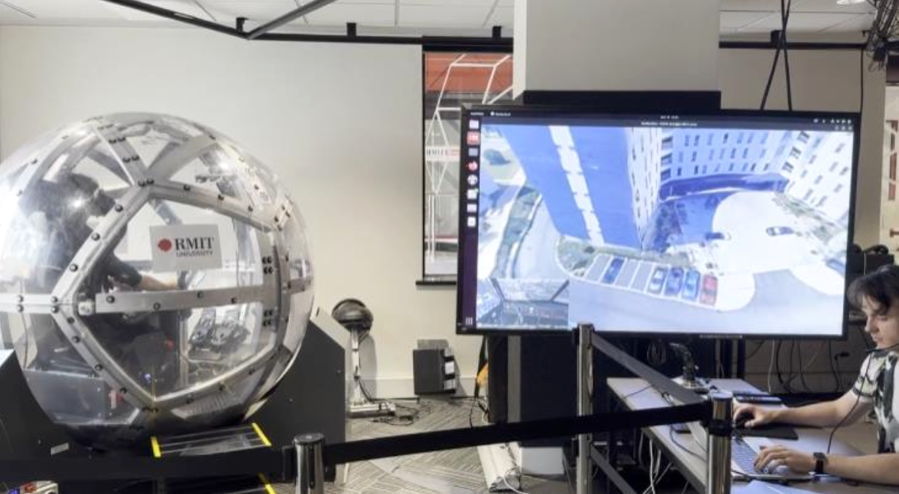

Honours thesis
Growing Wireworld circuits with Neural Cellular Automata, supervised by Sebastian Sardiña at RMIT, Melbourne.

Growing Wireworld circuits with Neural Cellular Automata, supervised by Sebastian Sardiña at RMIT, Melbourne.
For my Bachelor's capstone project, my team developed VR software that uses GPS and inertial data to replay recorded journeys. The software connects directly to the NOVA motion platform to control its 360° motion, synchronising physical movement with the VR visuals to recreate the sensation of the original journey.
